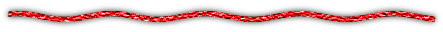

Units and Dimensions, Kinematics in one and two dimensions, circular motion, relative motion.
Newton's laws of motion, Internal and uniformly accelerated frames of reference, Spring force, Static and dynamic friction, Kinetic and potential energy, Work and power, Linear Momentum, Conservation of linear momentum and energy, Linear and angular simple harmonic motions.
Law of Gravitation, Gravitational potential and field, Acceleration due to gravity,Motion of planets and satellites in circular orbits.
Systems of particles, Centre of mass and its motion, Elastic and inelastic collisions, Moment of inertia, Parallel and perpendicular axes theorems, Moment of inertia of bodies having simple geometrical shapes e.g., uniform ring, disc, thin rod and cylinder.Anglar momentum, Torque conservation of angular momentum.
Hook's Law, Young's modulus.
Buoyancy, Pressure in a fluid, Bernoulli's theorem.
Wave motion, Longitudinal and transverse waves, Superposition of waves, Progressive and stationary waves, Vibration of strings and air columns, Resonance, Beats, Speed and sound, Doppler effect(in sound).
Thermal expansion of solids, Liquids and gasses, Elements of the kinetic theory of gases, ideal gas law, Specific heats and their ratio, isothermal and adiabatic processes, First law of thermodynamics, Calorimetry, Latent heat, Equivalence of heat and work.
Heat conduction in one dimension, Elementary concepts of convention and radiation, Newton's law of cooling, Black body radiation, Absorptive and emissive powers, Kirchoff's law.
Coulomb's law, Electric field and potential, Lines of force.
Capacitance, Dielectric constant, Parallel plate capacitor, Capacitors in series and parallel, Energy stored in capacitor. Electric current, Ohm's law, Series and parallel arrangements of resistance and cells, Kirchoff's laws and applications to networks, Charging and discharging of capacitor, Heating effect of current. Ampere's law and Biot-Savart law, Force on a moving charge and a current carrying wire in magnetic field. Magnetic moment of a current loop, Effect of a uniform magnetic field on a current loop, Moving coil galvanometer,voltmeter,ammeter. Electromagnetic induction: Faraday's law, Lenz's law, Self and mutual inductance, Growth and decay of current ina L-R Circuit.
Rectilinear propagation of light, Refraction and refraction at plane and curved surfaces, Total internal reflection, Deviation and dispersion of light by a prism. Thin lenses, Combination of mirrors and thin lenses, magnification, Microscope and telescope.
Wave nature of light, interference, Young's double slit experiment, fringe width.
Alpha,beta and gamma radiation, Law of radioactive decay, Decay constant, Half-life and mean life, Bohr's theory of hydrogen like atoms, characteristics and continuos X-rays.
Units and dimensions.Displacements,velocity and acceleration.Kinematics in one and two dimensions.Projectiles,circular motion.Concept of relative motion.
Newton's laws of motion,concept of inertial and uniformly accelerated frames.Forces; spring force, frictional force and gravitational force.
Work, energy and power.Momentum.Conservation of momentum and energy.Linear and angular simple harmonic motions.
Universal law of gravitation; gravitational potential and field; acceleration due to gravity; motion of planets and satellites in circular orbits; Kepler laws.
Systems of particles; centre of mass and its motion.Elastic and inelastic collisions.Rigid bodies: moment of inertia; parallel and perpendicular axes theorems; moment of inertia of simple geometric shapes,e.g.,uniform ring,disc,thin rod, and cylinder.Angular momentum and torque; equilibrium of rigid bodies; conservation of angular momentum.
Hooke's law;Young's modulus; shear and bulk moduli.Principle of buoyancy; pressure in a fluid;streamlined flow;Bernoulli's theorem.
Wave motion: concepts of amplitude, frequency and phase; longitudinal and transverse waves;superposition of waves; progressive and stationary waves; vibration of strings and air columns;resonance;beats.Velocity of sound; echo;Doppler effect.
Thermal expansion of solids, liquids and gases.Ideal gas laws; absolute temperature.Specific heats and their ratio.Isothermal and adiabatic processes. First law of thermodynamics.Calorimetry;latent heat;equivalence of heat and work. Heat conduction in one dimension; convection and elementary concepts of radiation; Stefan's law of radiation; Wein's displacement law; Newton's law of cooling.
Elements of the kinetic theory of gases. Pressure and temperature of an ideal gas.
Coulomb's law; electric field and electric potential; lines of force; capacitance; dielectric constant; parallel plate capacitor; capacitor in series and parallel; energy stored in a capacitor;charging and discharging of a capacitor. Electric current;Ohm's law; series and parallel arrangements of resistance and cells.Kirchoff's law and their application to networks.Heating effect of a current.
Biot-Savarat law; force on a moving charge and on a current-carrying wire in a magnetic feild.Magnetic moment of a current loop; moving coil galvanometer, voltmeter and ammeter.
Electromagnetic induction;Faraday's law; Lenz's law; definitions of self and mutual inductance.Growth and decay of current in an L-R circuit ;L-C oscillation.
Rectilinear propagation of light; reflection and refraction at plane and curved surfaces; total internal reflection and critical angle.Deviation and dispersion of light by a prism. Thin lenses;spherical aberration;combinations of mirrors and lenses;magnification;microscope and telescope.
Wave nature of light; interference; young's double slit experiment; fringe width; elementary concepts of diffraction by a single slit.
Alpha, beta and gamma radiation; law of radioactive decay; decay constant; half-life and mean life.Photoelectric effect. De Broglie wavelenght.Bhor's theory of hydrogen like atoms.Productions of characteristics and continuous rays; properties of X-rays. Atomic nucleus;binding energy and its calculation.Fission and fusion processes; energy calculations in these processes.
Elementary concepts of metals, insulators and semiconductors. Intrinsic and extrinsic semiconductors;p-n junction as rectifier;transistors;quantitative application as amplifier (in common emitter mode ) and oscillator.
